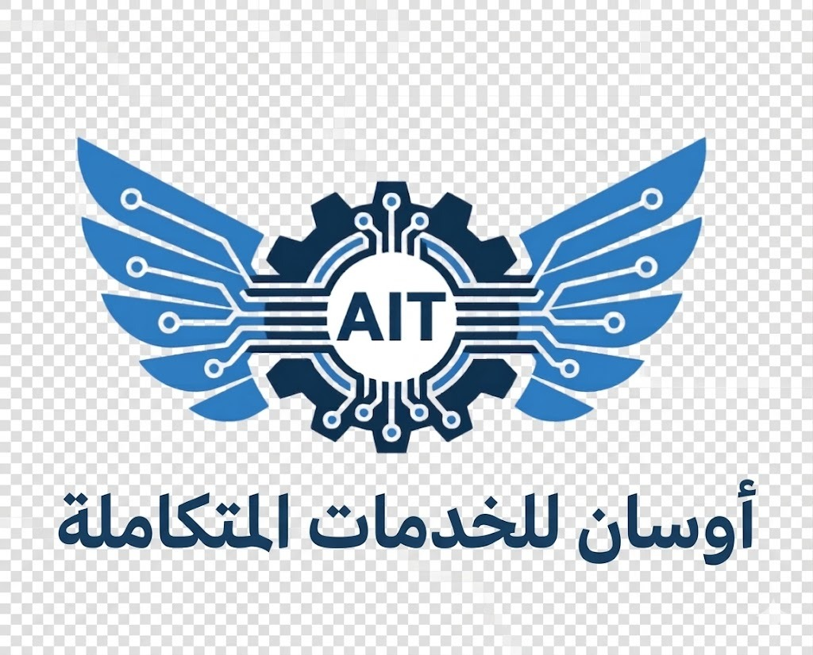

تمكين التكنولوجيا وتأمين المستقبل
نقدم حلول تقنية شاملة تساعد المؤسسات على تطوير أعمالها من خلال بنية تحتية موثوقة، وممارسات أمنية متقدمة، وتنمية القدرات المهنية والتقنية.
تُعد أوسان للتقنيات المتكاملة شركة متخصصة في مجال تقنية المعلومات، تقدم خدمات متكاملة تشمل الاستشارات التقنية، والأمن السيبراني، والتدريب الاحترافي، وتوريد الحلول التقنية.
تأسست الشركة بهدف دعم المؤسسات في بناء بيئات رقمية آمنة وفعالة وقابلة للتوسع بما يتوافق مع أحدث المعايير التقنية العالمية.
نقدم حلول تقنية شاملة تساعد المؤسسات على تطوير أعمالها من خلال بنية تحتية موثوقة، وممارسات أمنية متقدمة، وتنمية القدرات المهنية والتقنية.
يعتمد نهجنا على الجمع بين الخبرة التقنية والاستشارات الاستراتيجية والتنفيذ العملي لتحقيق قيمة حقيقية ومستدامة لعملائنا.
أن نكون شريكًا تقنيًا موثوقًا ورائدًا على المستوى الإقليمي في تقديم حلول تقنية آمنة ومبتكرة تمكن المؤسسات من تحقيق التحول الرقمي المستدام.
تمكين المؤسسات من خلال تقديم خدمات استشارية وتقنية عالية الجودة في مجال تقنية المعلومات والأمن السيبراني والتدريب الاحترافي، بما يعزز الكفاءة التشغيلية ويرفع مستوى الأمان والأداء المؤسسي.
الشفافية وبناء الثقة في جميع تعاملاتنا.
تبني أحدث التقنيات والحلول الحديثة.
حماية أنظمة وبيانات العملاء.
تقديم خدمات احترافية موثوقة.
بناء شراكات طويلة الأمد.
نساعد المؤسسات في تصميم وتحسين بيئات تقنية المعلومات الخاصة بها.
حماية الأصول الرقمية من التهديدات السيبرانية الحديثة.
تنمية المهارات التقنية من خلال برامج تدريب عملية ومتخصصة.
توفير منتجات تقنية موثوقة وحلول ترخيص برمجية متكاملة.
فهم متطلبات العمل والتحديات التقنية.
تطوير حلول آمنة وفعالة.
تطبيق الحلول وفق أفضل الممارسات.
تعزيز ضوابط الأمن السيبراني.
التحسين المستمر وتقديم الاستشارات.
مستشار تقني موثوق.
حلول فعالة من حيث التكلفة.
تطبيق أفضل ممارسات الأمن السيبراني.
خبرات تقنية احترافية.
حلول مخصصة لكل عميل.
التزام كامل بجودة الخدمة.
تسعى أوسان للتقنيات المتكاملة إلى التوسع في المجالات التالية: